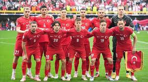
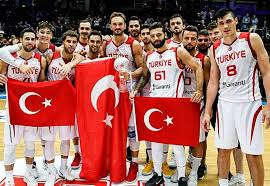

Galatasaray, Avrupa futbolunun en prestijli turnuvasında büyük bir başarıya imza attı. Zorlu bir rakibi deplasmanda mağlup ederek çeyrek finale yükselen sarı-kırmızılılar, Türkiye'yi gururlandırdı. Teknik direktör, bu başarının takım çalışması ve azim sayesinde geldiğini belirtti.
Türkiye Milli Futbol Takımı, Avrupa Şampiyonası öncesi hazırlıklarına tüm hızıyla devam ediyor. Teknik direktör, genç oyunculara fırsat tanırken, takımın fiziksel ve mental olarak güçlü bir şekilde turnuvaya hazırlandığını ifade etti. Taraftarlar, milli takımın bu yıl büyük başarılara imza atacağına inanıyor.
Türkiye Basketbol Süper Ligi'nde final serisinin üçüncü maçı nefesleri kesti. İki güçlü takım arasındaki mücadele, izleyicilere unutulmaz anlar yaşattı. Final serisinin kazananı, sadece şampiyonluk kupasını değil, Avrupa'da Türkiye'yi temsil etme hakkını da elde edecek.